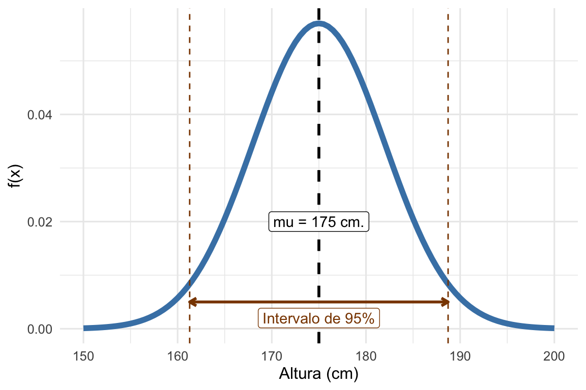

2 Repaso de probabilidad y estadística
2.1 Variables aleatorias
Wasserman(Wasserman 2004) nos dice que una variable aleatoria es un mapeo entre el espacio de eventos y los números reales (\(X:\Omega \rightarrow \mathbb{R}\)). Momento cerebrito ¿Esto que quiere decir? En términos prácticos, lo que implica es definición es que una variable aleatoria nos da un número para cada evento del posible espacio de eventos.
Vamos con un ejemplo. Supongan que tiramos una moneda justa dos veces y tenemos la variabla aleatoria \(X\) que cuenta la cantidad de caras (H)1. Los posibles eventos \(\omega\) del espacio de eventos \(\Omega\) son \(\Omega = \{ TT, TH, HT, HH \}\). En este caso, la variable aleatoria \(X\) va a tomar los valores \(X = \{ 0, 1, 1, 2\}\) para cada \(\omega\). Esto, en resumidas cuentas, es lo que hace una variable aleatoria.
El ejemplo anterior se trata de una variable aleatoria discreta, es decir, que sólo puede tomar algunos valores posibles, pero también existen variables aleatorias continuas como por ejemplo la altura de una nueva persona que nace.
2.2 Probabilidad
Para una variable como la definida en el ejemplo anterior podemos definir fácilmente su probabilidad de ocurrencia. Debido que la moneda es justa, todos los eventos de \(\Omega\) son equiprobables, y es por eso que podemos definir:
| \(\omega\) | \(X(\omega)\) | \(P({\omega})\) |
|---|---|---|
| TT | 0 | 1/4 |
| TH | 1 | 1/4 |
| HT | 1 | 1/4 |
| HH | 2 | 1/4 |
Sin embargo, el concepto de probabilidad es algo complejo, pero, como esto no es un curso de probabilidad, vamos a confiar en que ustedes ya lo traen claro. Si tienen coraje puede ir a leer el capítulo 1 de (Wasserman 2004) y si quiere algo más terrenal pueden ir a ver el repaso de probabilidad de (Cunningham 2021) (disponible online).
Cuando las variables aleatorias son continuas la cosa se complica un poco más ya que \(P(X=c)\), es decir, la probabilida de que una variable tome un valor dado, es cero. Esto lo vamos a repensar un poco en la siguiente sección, cuando definamos lo que nos importa para este libro: Las funciónes de densidad y de distribución.
2.3 Eventos y probabilidad condicional
Acá agregar lo de árboles y diagramas.
Pensemos en un ejemplo
2.4 Probabilidad total
Ahora imaginemos que pasa si queremos calcular la probabilidad de B (\(P(B)\)). Bueno, para esto tendríamos que considerar la probabilidad de que ocurra B dado que ocurrió S y junto con la probabilidad de B dado que NO ocurrió S. A su vez, cada una de estas probabilidades deberíamos pesarlas por la probabilidad de que ocurra o no A. Esto sería:
\[ P(B) = P(B|A) \times P(A) + P(B|\neg A) \times P(\neg A) \]
Volvamos al ejemplo de las cartas. En este caso, si calculamos la probabilidad de B obenemos:
\[ P(B) = XXX \]
De forma general definimos a la probabilidad total como:
\[ blabla \]
2.5 Teorema de Bayes
Ahora que ya llegamos a la fórmula de Bayes a partir de las definiciones de probabilidad total podemos tomar prestado un ejemplo de (Herzog, Francis, and Clarke 2019): Tenemos un test para identificar si somos portadores de un virus (llamémoslo IKV). Este test tiene una sensibilidad de 99.99% y una especificidad de 99.99%. Es decir, la probabilidad de que el test de positivo, dado que tenemos el virus (\(P(T^+|IKV)\)) es de 0.9999, y lo mismo ocurre para la probabilidad de que el test de negativo en caso de que NO tengamos el virus (\(P(T^-|\neg IKV)\)). Sabemos también que la incidencia del virus IKV es de 1 en 10000.
Supongamos que somos elegidos aleatoriamente para realizarnos el test y este da positivo ¿Qué probabilidad de ser portadores del virus tenemos (\(P(IKV|T^+)\))? La primera respuesta que se nos viene es 0.9999 ¿Verdad? Pero, si estuvimos prestando atención, ya a esta altura debemos saber que para invertir la condicionalidad de una probabilidad tenemos que acudir al bueno de Bayes. O sea:
\[ P(IKV|T^+) = \frac{P(T^+|IKV) \times P(IKV)}{P(T+)} \]
donde \(P(T^+|IKV) = 0.9999\) y \(P(IKV) = 1/10000 = 0.0001\). Además, echando mano a la definición de probabilidad total podemos calcular \(P(T+)\) como:
\[ P(T+) = P(T^+|IKV) \times P(IKV) + P(T^+|\neg IKV) \times P(\neg IKV) \]
donde \(P(T^+|\neg IKV) = 1-0.9999\) y \(P(\neg IKV) = 1-0.0001\). Reemplazando todos los valores tenemos que:
\[ \begin{array} _P(IKV|T^+) &=& \frac{P(T^+|IKV) \times P(IKV)}{P(T+)}\\ &=& \frac{P(T^+|IKV) \times P(IKV)}{P(T^+|IKV) \times P(IKV) + P(T^+|\neg IKV) \times P(\neg IKV)} \\ &=& \frac{0.9999 \times 0.0001}{0.9999 \times 0.0001 + (1-0.9999) \times (1-0.0001)} \\ &=& \frac{0.9999 \times 0.0001}{0.9999 \times 0.0001 + 0.0001 \times 0.9999} \\ &=& 0.5 \end{array} \]
¿Qué? ¿Esto significa que si el test me da positivo solo tengo un 0.5 de probabilidad de tener el virus? ¿Esto quiere decir que los tests no sirven para nada? Momento, analicemos un poco al resultado al que llegamos. Lo que nos dice esta cuenta es que, una vez que el test nos da positivo, a pesar de lo sensible del test y por lo “raro” de la portación del virus, nuestra probabilidad de ser portadores es de 0.5. Pero, ¿Y nuestra probabilidad de ser portadores si el test nos da negativos? Hagamos la cuenta:
\[ \begin{array} _P(IKV|T^-) &=& \frac{P(T^-|IKV) \times P(IKV)}{P(T-)}\\ &=& \frac{P(T^-|IKV) \times P(IKV)}{P(T^-|IKV) \times P(IKV) + P(T^-|\neg IKV) \times P(\neg IKV)} \\ &=& \frac{(1-0.9999) \times 0.0001}{(1 - 0.9999) \times 0.0001 + (0.9999) \times (1-0.0001)} \\ &=& 1E-8 \end{array} \]
OK, ahora la cosa tiene más sentido. O sea, el test es bastante bueno para decirnos cuando no somos portadores y dando negativo, el problema es cuando da positivo. En este caso tenemos que preocuparnos, pero, como vimos anteriormente, la probabilidad de ser portadores es de apenas 0.5.
Hay una solución más simple para esto y es la que deben estar pensando ustedes: ¿Y si me hacen un segundo test? ¡BINGO! Calculemos rápidamente la probabilidad de estar infectados si nos testean por segunda vez:
\[ P(IKV|T^{2+}) = \frac{0.9999^2 \times 0.0001}{0.9999^2 \times 0.0001 + 0.0001^2 \times 0.9999} = 0.9999 \] Ahora sí, si somos testeados por segunda vez, la probabilidad de ser portadores dado que tenemos dos resultados positivos trepa a 0.9999. Nos podemos quedar tranquilos.
Para cerrar, me gustaría que pensemos un poco en una palabra MUY importante que se dijo en el enunciado del problema: Aleatoriamente. En muchos de los casos en los que nos testeamos para ver si somos portadores de un virus, lo hacemos porque tenemos algún tipo de presunción de que podemos serlo (por ejemplo, tenemos síntomas). ¿Cuál creen que sería la probabilidad que se modifica en la fórmula? Exacto, \(P(IKV)\), ya que sería más bien \(P(IKV|síntomas)\).
2.6 Tablas de contingencia
2.7 Esperanza
La esperanza de una variable aleatoria \(X\), a veces también llamada media poblacional, es simplemente la suma pesada de todos sus valores posibles. No debemos confundir la esperanza con el promedio muestral, aunque, como veremos en breve, para algunos casos el primero es un estimador insesgado del segundo.
La esperanza de una variable aleatoria discreta se define como:
\[ E[X] = \sum_{1}^\infty x_i p(x_i) \] En este caso es muy claro la naturaleza de promedio pesado, ya que a cada valor posible de \(X\) lo estamos pesando por su probabilidad. Sin embargo, para una variable aleatoria continua, en la que no tenemos definida una probabilidad puntual \(p(x_i)\) sino una función de densidad \(f(x)\), la definición es la siguiente:
\[ E[X] = \int_{-\infty}^\infty x f(x) dx \]
Como resulta esperable, la suma se transforma en una integral y la probabilidad puntual se reemplaza por \(f(x)\).
Algunas propiedades importantes de la esperanza son:
\[ \begin{array} _E(aX+b) & = & aE(X) + b\\ E(\sum_{i=1}^n X_i) & = & \sum_{i=1}^nE(X_i) \end{array} \] Por último y a modo de aviso, advertencia y amenaza, recordemos que \(E(X)^2 \neq E(X^2)\).
2.8 Varianza y covarianza
2.9 Correlación
2.10 Población y muestra
Acá usar una versión de la figurita de All of statistics que pone la generación de los datos en el dominio de la probabilidad y la estimación de estos parámetros en el dominio de la estadística. Me parece una forma ideal de empezar a hablar de qué queremos hacer con la estadística.
Vamos con un ejemplo que nos puede ayudar a entender de qué hablamos cuando hablamos de estimación. Supongamos que conocemos distribución de la altura de la población de varones en Argentina. No estamos hablando de calcular el promedio de la altura de los varones sino de que conocemos la función de densidad de la cual la altura de cada varón es una muestra. Si no queda del todo claro respiren hondo y esperen un poco que ya se va a ir aclarando. Entonces, la altura de los varones de Argentina tiene una distribución normal con media en cm. de \(\mu_{varones} = 175\) y una desviación estándar \(\sigma_{varones} = 7\), o, como ya aprendimos a decir: \(h_{varones} \sim \mathcal{N}(\mu_{varones},\sigma^2_{varones}) = \mathcal{N}(175, 49)\)2. A continuación podemos ver la función de densidad:

Ahora bien, en la figura podemos ver la función \(f(x)\) junto con una línea vertical que nos indica la media y dos líneas que nos indican los percentiles \(2.5\) y \(97.5\), es decir, que contienen el 95% de la masa de probabilidad. Todo esto es muy lindo pero estamos jugando a ser dios (o el Doctor Manhattan, o en lo que ustedes crean). Es imposible conocer los parámetros de esta distribución pero lo que sí podemos hacer en la práctica es estimarlos. Estimar los parámetros de un modelo es el pan y manteca de la inferencia estadística y el data mining. Como podemos ver en esta hermosa figura de Wasserman(Wasserman 2004), la teoría de probabilidad nos ayuda a definir modelos para la generación de datos y la inferencia estadística nos ayuda a estimar estos parámetros.
Hay diversas formas de encontrar estimadores para los parámetros de un modelo (por ejemplo, método de los momentos, máxima verosimilitud, etc.) pero entenemos que eso excede los contenidos de este curso. Sin embargo, para estimar todos conocemos los estimadores de los parámetros poblacionales \(\mu\) y \(\sigma^2\). Claro, el promedio \(\bar{x}\) y el desvío muestral \(\hat{S}^2\):
\[ \begin{array} \\\bar{x} & = & n^{-1} \sum_{i=1}^n x_i\\ \hat{S}^2 & = & (n-1)^{-1} \sum_{i=1}^n (x_i \end{array} \]
Simulemos tres experimento tomando 10, 50 y 100 mediciones (\(n\)) y veamos los histogramas de estas muestras y sus estimaciones de \(\mu\) y \(\sigma\).

Como es de esperarse, podemos ver que al aumentar \(n\), la estimación de los parámetros poblacionales es mejor. Pero tenemos que tener esta idea en mente, cada vez que tomamos una muestra podemos estimar un parámetro de la población y hasta hacer inferencias estadísticas sobre el mismo, pero NUNCA lo vamos a conocer.